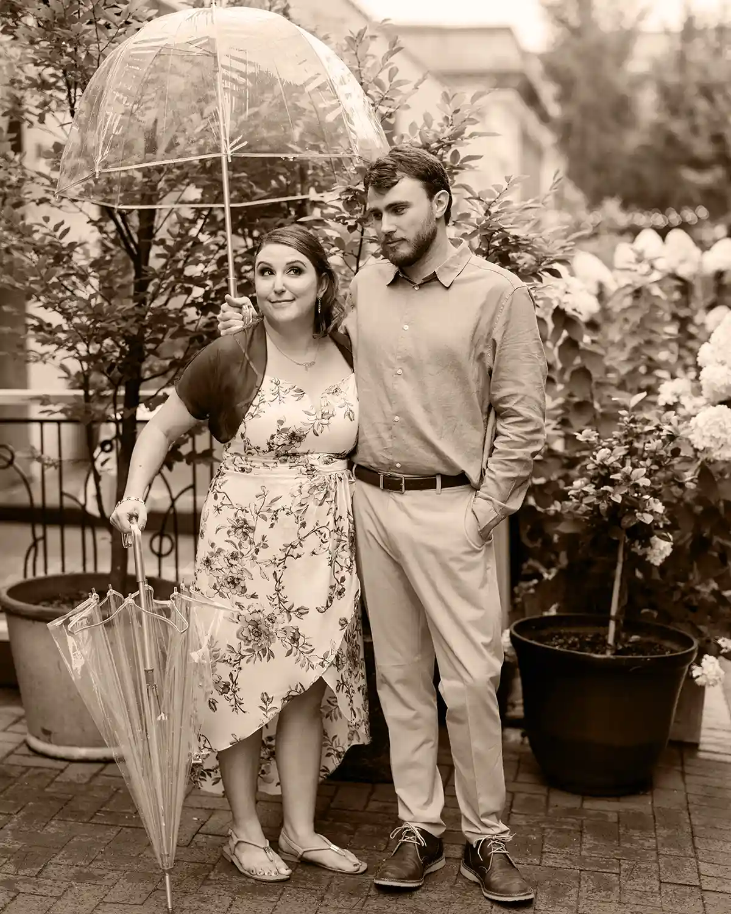

Your website should work as hard as you do.
If you've read this far and it feels right — it probably is.
See how we can work togetherI'm Tianna — web designer, strategist, and the person behind Neva Masquerade. I help coaches ditch their DIY templates and build websites that actually sound like them.
See how we can work together
Growing up, I thought I'd be a lawyer, but after enjoying my history degree in undergrad, I went on to earn a master's instead. During grad school, I landed an internship at the U.S. Department of State.
After graduating, I joined my current office as a web editor. Four years later, I became the team lead and product owner of state.gov — a 47,000-page site with 79 million annual visitors. I led daily operations until 2026, when my role evolved into design and strategy lead.
As a historian, I'm trained to take messy, scattered material and find the story inside it. Turns out that's exactly what web strategy requires. But it’s more than that.
When I got married, I tried to build our wedding website on Zola. Every template felt like a cage. I couldn't bring my vision to life because I couldn't break the mold. That frustration stuck with me — and it's why I reject templates for my clients. Your story deserves to take center stage. Not someone else's design.
When I got married, I tried to build our wedding website on Zola. It was supposed to be easy — but every template felt like a cage. I couldn’t bring my vision to life because I couldn’t break the mold.
All the normal web design names were taken — or boring. I'd been stuck for weeks. Then, one night at 1am, I ended up scrolling cat breeds on Wikipedia.
That’s when the Neva Masquerade jumped out. It sounded cool, looked beautiful, and, most importantly, no one else was using it.
Devon Rex was the runner-up.
I work best with coaches who share these convictions. If they resonate, we're probably a good fit.
People don't buy services — they buy stories they believe in. Your message is the strategy, not an afterthought.
Your business isn't plug-and-play. Your website shouldn't be either. Cookie-cutter sites signal cookie-cutter work.
A beautiful site that says the wrong thing is still the wrong site. Clarity earns clients. Aesthetics just get attention.
You can't sell what you can't say simply. When your message lands, the right people feel it immediately.
Strategy, copy, code — that's my job. Your job is to show up and do your brilliant work.

Traffic doesn't pay the bills. Booked clients do. A site that converts one right-fit person beats a site that attracts a thousand wrong ones.
Every project moves through three phases — no surprises, no scope creep, no disappearing act after launch.
We uncover who you are, who you serve, and what your site needs to say. You complete a detailed questionnaire and I build your Untemplate Playbook.
I write your copy, design your pages, and build your site. You give feedback in two defined rounds and approve each phase before we move to the next.
Final QA, mobile testing, and forms connected. Then we record your custom site walkthrough so you know exactly how everything works before I hand over the keys.
"You made the entire process feel manageable. You broke things down, walked me through decisions, and helped me actually see my vision more clearly than I could on my own."
Livi North, Unfuck Your CoparentingIf you've read this far and it feels right — it probably is.
See how we can work together